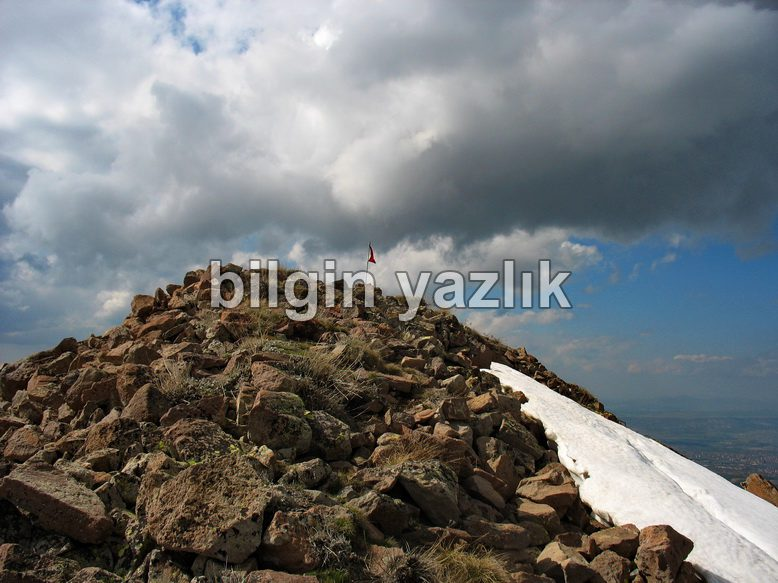
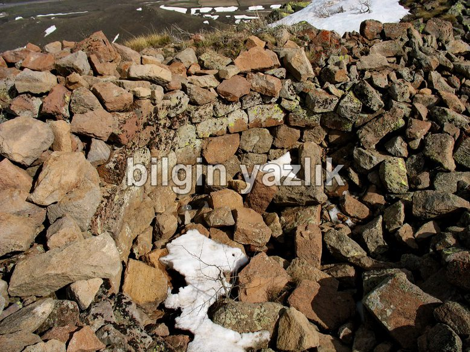
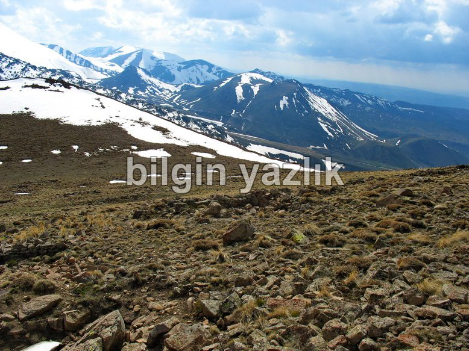
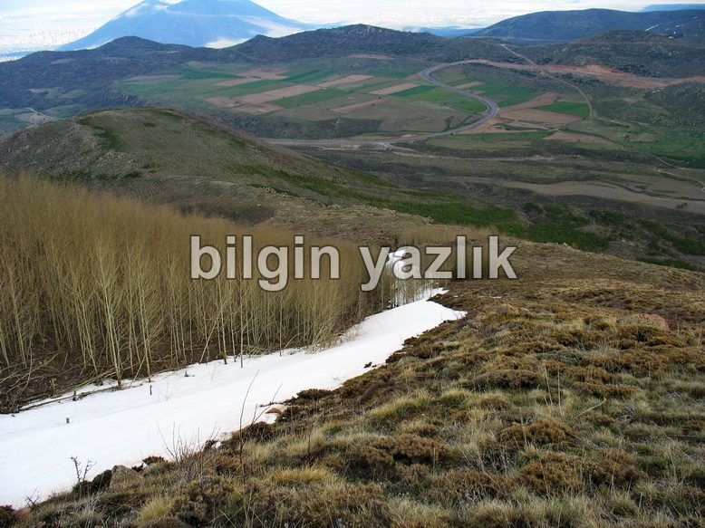
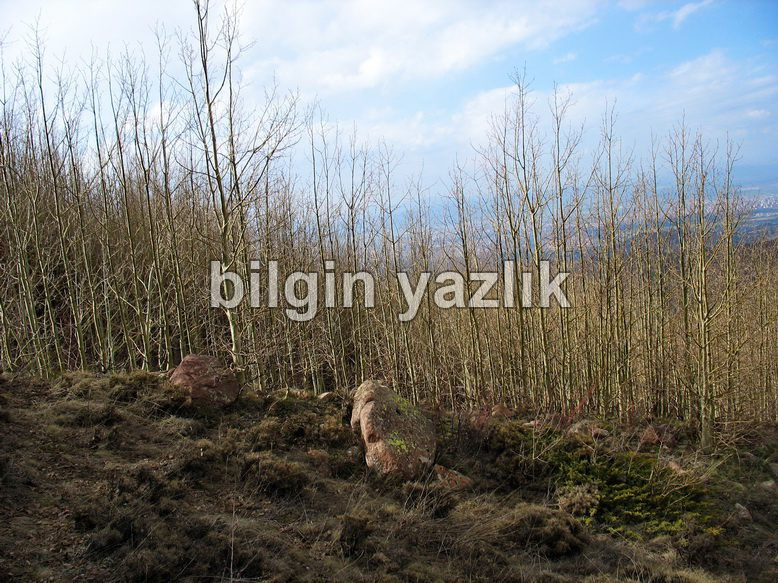
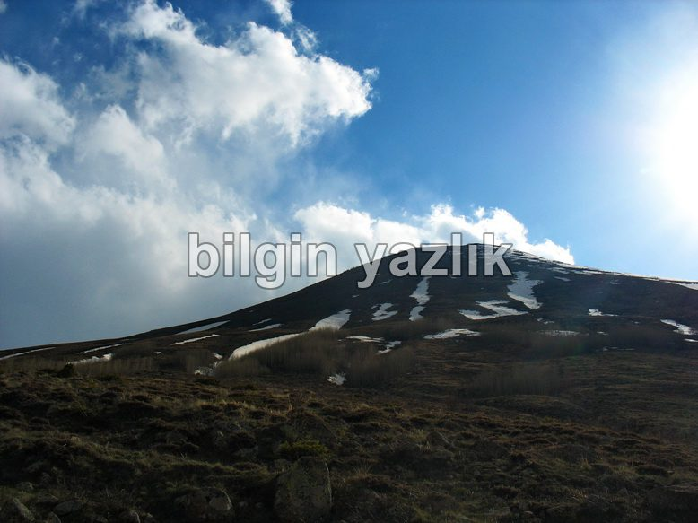
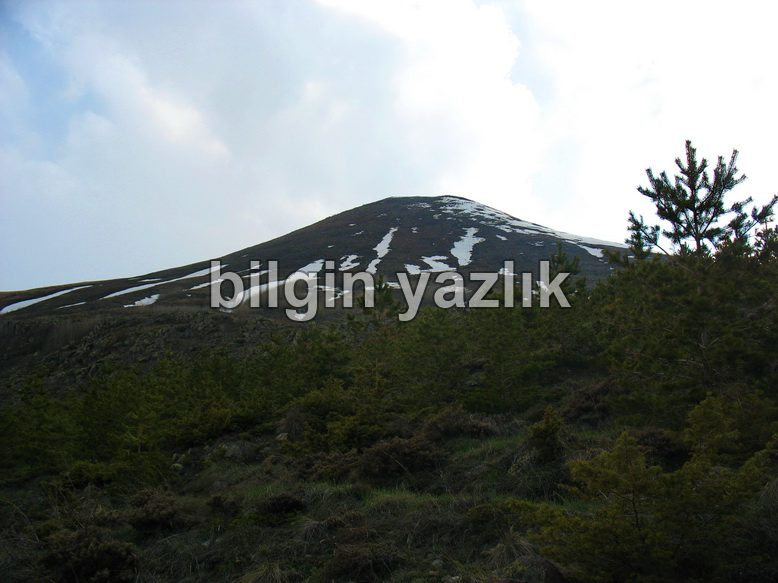
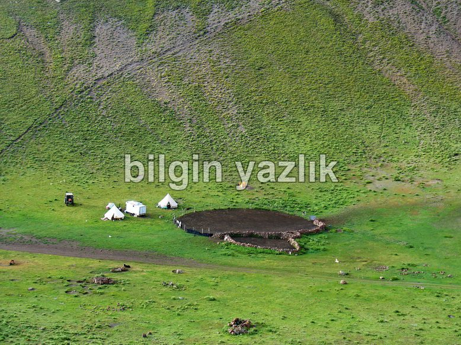
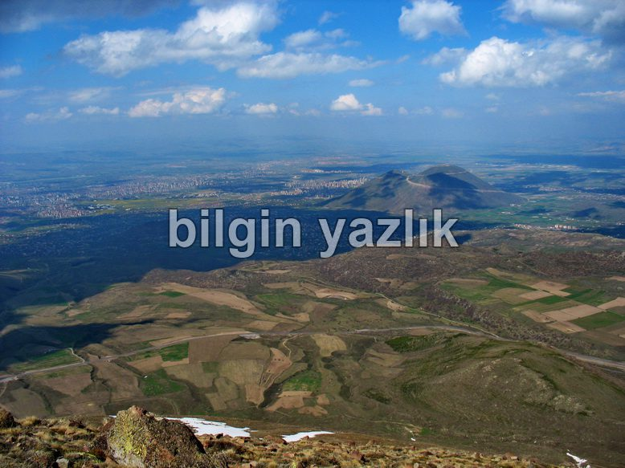
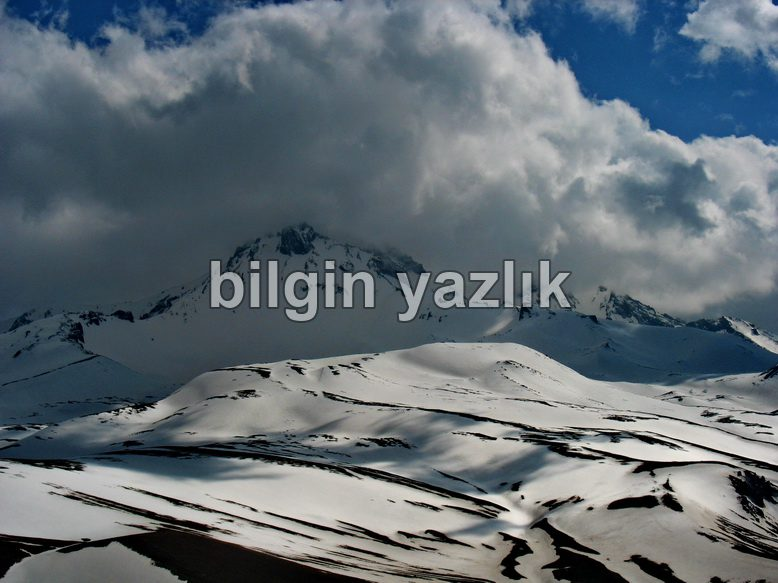

Lifos Dağı
Erciyes’in eteklerinde yükselen Lifos’un yüksekliği yaklaşık olarak 2510 m’dir. Kuzey yamaçlarında çok sayıda kavak ağacı yer almaktadır. Çok sık olan bu ağaçların arasından yürümek yer yer imkansızlaşabiliyor, fakat heyelanı önlemesi açısından son derece faydalı bir konumdalar.
Lifos’a doğrudan kuzey cephesinden tırmanılabilir fakat oldukça dik bir dağ olduğu için bu rota son derece zorlayıcıdır bu nedenle ben güney cepheyi öneririm. Güney cephe tırmanma rotasına Erciyes’ten Hacılar’a inen yoldan Serçer yaylası yoluna girerek ulaşmak mümkündür. Lifos’un güney eteklerinde yaz aylarında çadır kuran birkaç aile yaşıyor. Güney rotasından zirveye ulaşmak daha kolay, çünkü yol daha kısa. Dağın güney eteklerinde bir de tatlı su kaynağı yer alıyor, bu su Serçer yaylasına kadar taşınıyor.
Lifos dağının aslında iki zirvesi vardır, bu zirvelerde tarihi kalıntılar yer almaktadır. Aşağıdaki fotoğraflardan da göreceğiniz üzere buralarda bir zamanlar yapılaşmanın olduğu görülmektedir. Ne maksatla kullanıldığını kestirmek çok zor, işin açıkçası bu konuda çok da bilgi bulamadım. Fakat yöre halkından duyduğum kadarı ile dağın zirvesinde bir dönem sıcak su kaynakları yer almakta imiş ve buraya zamanın insanları hamam inşa etmişler. Yapıların bir kısmı kale surunu andırmaktadır, bana gözetleme mevzisi gibi geldi ama bilemiyorum. Konu ile ilgili bilginiz varsa paylaşmanızı rica edeceğim.
Zirvede bir de zirve defteri yer alıyor, yanında Türk Bayrağı dalgalanan deftere zirveye varmışken bir hatıra yazmadan dönmek olmaz.
Bugüne kadar gerçekleştirdiğim tırmanışlarda dağda herhangi bir hayvana rastlamadım, fakat bölgede yaşayan göçebe yaylacılardan duyduğum kadarı ile dağda çok sayıda kurt ve yılan yaşamakta imiş.
Bugünlerde Lifos ve çevresinde teleferik inşaatı çalışmaları devam ediyor, bölgenin doğallığına zarar verecek bu çalışmalar neticesinde bölgeye daha çok insanın çekilmesi planlanmaktadır. Bu inşaat için yapılan yollar kullanılarak Lifos’un arkasından Müjgar yaylasına kadar gidilebilmektedir.
Şehir manzarası seyretmek, Erciyes’e bir adım daha yaklaşmak, enteresan tarihi yapıları incelemek ve baharın kokusunu ciğerlerinize doldurmak için harika bir yer: Lifos Dağı.










Bu yazı taliyol arşivinden taşınmıştır. · özgün kayıt